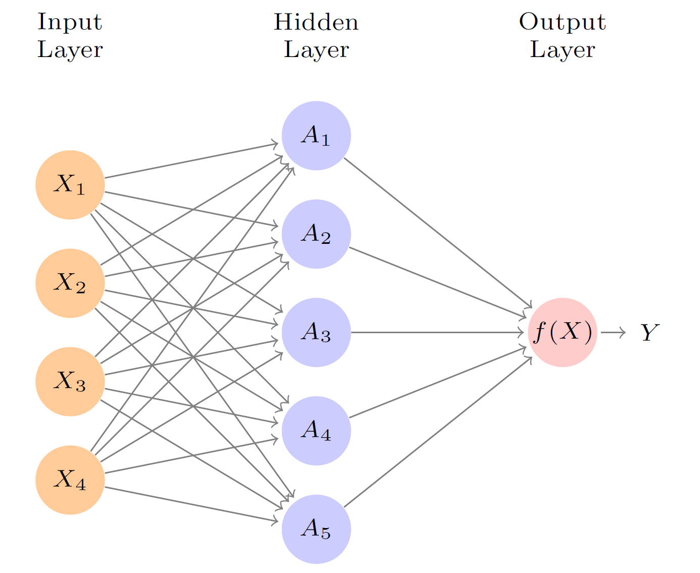
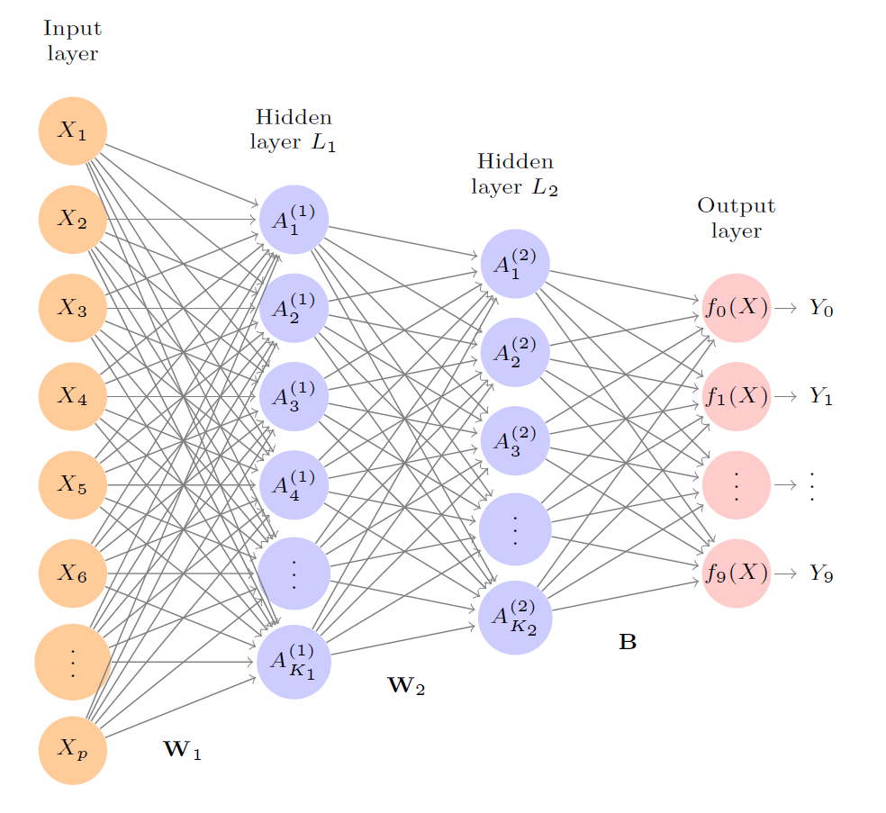
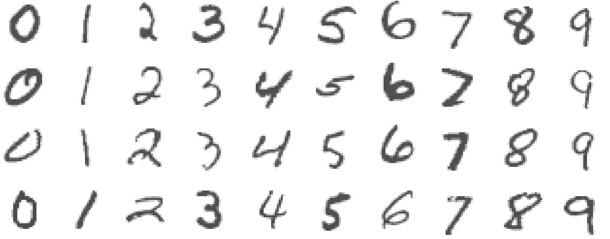

Chapter 20 Deep Learning
References:
Ch10: in An introduction to Statistical Leraning with applications in R by James, Witten, Hastie and Tibshirani (some basic introduction with some math equations)
Deep Learning with R by Francois Chollet with J.J. Allaire. (no math equations but offer practical guildlines in implementation)
20.1 Introduction
In the past few years, artificial intelligence (AI), machine learning, deep learning have been subjects of intense media hype.
One may define AI as the study to automate intellectual tasks normally performed by humans. AI encompasses machine learning but also includes other approaches that don’t involve any learning. For example, early chess programs only involved hardcoded rules crafted by programmers. For a fairly long time, many experts believed that human-level AI could be achieved by having programmers handcraft a sufficiently large set of explicit rules for manipulating knowledge. This approach is known as symbolic AI.
It turns out it is intractable to figure out explicit rules for solving more complex problems, such as image classification, speech recognition, and language translation. A new appraoch is to use machine learning.
You have already studied various machine learning methods and how to apply them with R: \(k\)-NN, linear regression, logistic regression, \(k\)-means clustering, hierarchical clustering, ridge regression, LASSO, decision trees, random forest. These approaches are also examples of shallow learning.
So, what is deep learning?
Deep learning is a subset of machine learning
The deep in deep learning refers to the idea of successive layers of representations (see next section)
These layered representations are learned via neural networks, which is the cornerstone of deep learning
Some important factors that drive the advances in machine learning
- Hardware: faster CPU (central processing units) and GPU (graphics processing unit), TPU (tensor processing unit)
- Datasets: the rise of internet allows people to collect many data
- Benchmarks: competitions such as Kaggle allow people to have benchmarks that researchers compete to beat
- Algorithmic advances
20.2 Single Layer Neural Netowrks
A neural network takes an input vector of \(p\) variables \(X = (X_1,\ldots,X_p)\) and builds a nonlinear function \(f(X)\) to predict the response \(Y\). A linear function is a function of the form \[f(X) = \beta_0 + \beta_1 X_1 + \ldots + \beta_p X_p.\] In general, a linear function is not enough to describe the complex relationship between \(X\) and \(Y\).
Graphical illustration of a single layer neural network:

- Input layer: consists of \(p\) input variables (the picture shows \(4\) but we can have many more)
- Hidden layer: consists of \(K\) hidden units (the picture shows \(5\) but we can have many more)
- Output layer: prediction of the response (we can have more than one output variable)
Activations \(A_k\), \(k=1,\ldots,K\) are computed as functions of the input features \[\begin{equation*} A_k = g\left(w_{k0} + \sum^p_{j=1} w_{kj}X_j \right), \end{equation*}\] where \(g\) is a nonlinear activation function that is specified in advance and the weights \(w_{k0},\ldots,w_{kp}\) have to be estimated from the data. For the function \(g\), it is common to use ReLU (rectified linear unit), which takes the form \[\begin{equation*} g(z) = z I(z \geq 0). \end{equation*}\] With nonlinear activation functions, it is possible for the model to capture complex nonlinearities and interaction effects (e.g. \(X_1 X_2\)).
Representation: We can think of each \(A_k\) as a different transformation \(h_k(X) = g\left(w_{k0} + \sum^p_{j=1} w_{kj}X_j \right)\) of the original features.
For regression problem, the output is \[\begin{equation*} f(X) = \beta_0 + \sum^K_{k=1} \beta_k A_k. \end{equation*}\]
If you want to write in terms of the original \(X\): \[\begin{equation*} f(X) = \beta_0 + \sum^K_{k=1} \beta_k g\left(w_{k0} + \sum^p_{j=1} w_{kj}X_j \right). \end{equation*}\]
Estimation
Parameters in the model: \(\beta_0,\ldots,\beta_K, w_{10},\ldots,w_{Kp}\).
Suppose we have \(n\) data \(\{ (x_i, y_i)\}^n_{i=1}\). To estimate these parameters, the squared-error loss is typically used. That is, we wish to find parameters to minimize \[\begin{equation*} \sum^n_{i=1} (y_i - f(x_i))^2. \end{equation*}\]
We will describe how to use neural network in classification problems in the next section.
Remark
The name neural network originally derived from thinking of the model as analogous to neurons in the brain. But there is no need to think in that way.
20.3 Multilayer Neural Networks
Modern neural networks typically have more than one hidden layer, and many units per layer. In general, you can also have more than one output variable. In particular, if you have a classification problem at hand with \(M\) classes. You will need \(M\) output variables to model the probabilities of the response being in the \(M\) classes.
A graphical illustration of a neural network with \(2\) hidden layers:

- Input layer: consists of \(p\) input variables
- \(1\)st Hidden layer: consists of \(K_1\) hidden units
- \(2\)st Hidden layer: consists of \(K_2\) hidden units
- Output layer: prediction of the responses
The activations in the first hidden layer: \[\begin{equation*} A^{(1)}_k = g\left(w^{(1)}_{k0} + \sum^p_{j=1} w^{(1)}_{kj} X_j\right) \end{equation*}\] for \(k=1,\ldots,K_1\).
The activations in the second hidden layer treats the activations \(A^{(1)}_k\) of the first hidden layer as inputs and computes new activations:
\[\begin{equation*} A^{(2)}_k = g\left(w^{(2)}_{k0} + \sum^{K_1}_{k=1} w^{(2)}_{kj} A_k^{(1)}\right) \end{equation*}\]
Output layer:
For regression problem: \[\begin{equation*} f_m(X) = \beta_{m0} + \sum^{K_2}_{l=1} \beta_{ml} A^{(2)}_l,\quad \text{for } m = 1,\ldots,M. \end{equation*}\] In terms of the original \(X\), we have \[\begin{equation*} f_m(X)= \beta_{m0} + \sum^{K_2}_{l=1} \beta_{ml} g\left(w^{(2)}_{k0} + \sum^{K_1}_{k=1} w^{(2)}_{kj} g\left(w^{(1)}_{k0} + \sum^p_{j=1} w^{(1)}_{kj} X_j\right)\right). \end{equation*}\]
For classification problem, we do not directly output the predicted class but we try to predict the probability \(P(Y=m|X)\). Hence, we use \[\begin{equation*} Z_m = \beta_{m0} + \sum^{K_2}_{l=1} \beta_{ml} A^{(2)}_l,\quad \text{for } m = 1,\ldots,M \end{equation*}\] and set \[\begin{equation*} f_m(Z) = \frac{e^{Z_m}}{\sum^M_{m=1} e^{Z_m}}, \text{for } m=1,\ldots,M. \end{equation*}\] The function in the last displayed equation is called the softmax activation function. This ensures all the outputs behave like probabilities (non-negative and sum to one).
For classification problem, we use the one-hot encoding for \(y_i\) so that \(y_{im} = 1\) if \(y_i = m\) and \(y_{il} = 0\) for \(l \neq m\). Then we estimate the parameters using the cross-entropy: \[\begin{equation*} - \sum^n_{i=1} \sum^M_{m=1} y_{im} \log (f_m(x_i)), \end{equation*}\] which is the negative of the likelihood of a multinomial distribution.
Remark
The multinomial distribution is a generalization of the binomial distribution. Recall that a binomial distribution models the number of successes in \(n\) independent Bernoulli trials. In a Bernoulli trial, there are only two possible outcomes, success and failure. When we have \(M\) classes and \(n\) independent trials, we obtain a multinomial distribution. A special case is when we only have one trial. In that case, it is called a categorical distribution and the probability mass function is \[\begin{equation*} P(Y = m) = p_m, \quad m =1,\ldots,M, \end{equation*}\] where \(p_m \geq 0, \sum^M_{m=1} p_m = 1\). When you observe \(y_i\), the likelihood becomes \[\begin{equation*} \prod^M_{m=1} p_m^{I(y_i = m)}. \end{equation*}\] The log-likelihood is \[\begin{equation*} \sum^M_{m=1} I(y_i = m ) \log p_m = \sum^M_{m=1} y_{im} \log p_m. \end{equation*}\]
20.4 Examples
20.4.1 MNIST
We will use Keras, a deep-learning framework that provides a convenient way to define and train deep-learning models. One of the backend implementations in Keras is TensorFlow, which is one of the primary platforms for deep learning today. Almost every recent deep-learning competition has been won using Keras models. For serious deep learning users, need to train deep learning models with GPUs.
To install Keras, follow the installation guide on https://tensorflow.rstudio.com/guide/keras/
We will fit a neural network to recognize handwritten digits from the MNIST dataset. MNIST consists of \(28 \times 28\) greayscale images of handwritten digits like these:

The MNIST dataset is a classic dataset in the machine-learning community which has been around almost as long as the field itself and has been intensively studied. It’s a set of 60,000 training images, plus 10,000 test images, assembled by the National Institute of Standards and Technology (the NIST in MNIST) in the 1980s. You can think of “solving” MNIST as the “Hello World” of deep learning—it’s what you do to verify that your algorithms are working as expected.
Load the data:
library(keras)
mnist <- dataset_mnist()
train_images <- mnist$train$x
train_labels <- mnist$train$y
test_images <- mnist$test$x
test_labels <- mnist$test$yThe images are encoded as 3D arrays, and the labels are a 1D array of digits, ranging from \(0\) to \(9\). There is a one-to-one correspondence between the images and the labels.
To view the data of the first image (which is a \(28 \times 28\) matrix of integers in \([0, 255]\)):
20.4.2 Encoding the data
For each image, we first turn the matrix of values into a vector of values. We also rescale the data to have values in \([0, 1]\). The data originally take integer values in \([0, 255]\).
train_images <- array_reshape(train_images, c(60000, 28 * 28))
train_images <- train_images / 255
test_images <- array_reshape(test_images, c(10000, 28 * 28))
test_images <- test_images / 255The original labels take integer values from \(0\) to \(9\). We will apply one-hot encoding to the labels:
For example, if there are only \(3\) classes labeled as \(1,2,3\) and \(y = 2\). Then we want to turn \(y\) into \((0, 1, 0)\). If \(y = 1\), we want to turn it into \((1, 0, 0)\).
20.4.3 Implementation
Model specification
model <- keras_model_sequential() %>%
layer_dense(units = 512, activation = "relu", input_shape = c(28 * 28)) %>%
layer_dense(units = 10, activation = "softmax")
model
## Model: "sequential"
## ________________________________________________________________________________________________
## Layer (type) Output Shape Param #
## ================================================================================================
## dense_1 (Dense) (None, 512) 401920
##
## dense (Dense) (None, 10) 5130
##
## ================================================================================================
## Total params: 407,050
## Trainable params: 407,050
## Non-trainable params: 0
## ________________________________________________________________________________________________There are \(407,050\) parameters! The above code means we specify a model with
- One hidden layer with \(512\) units, the activation function is ReLU (rectified linear unit)
- The output layer has \(10\) units, the activation is the softmax function because we are dealing with a multiclass classification problem.
Compiling the model
model %>% compile(
optimizer = "rmsprop",
loss = "categorical_crossentropy",
metrics = c("accuracy")
)For multiclass classification, the above setting is in general ok.
Setting aside a validation set
Setting aside a validation set to choose the number of epochs (each iteration over all the training data is called an epoch). The number of epochs is an important tunning parameter that one has to decide in order not to overfit the training data.
Note: since we have a lot of data, we use a simple validation approach instead of the cross-validation.
index <- sample(dim(train_images)[1], 10000)
partial_train_images <- train_images[-index, ]
partial_train_labels <- train_labels[-index, ]
validation_images <- train_images[index, ]
validation_labels <- train_labels[index, ]Train the model with \(15\) epochs and evaluate the loss using the validation data:
history <- model %>% fit(
partial_train_images,
partial_train_labels,
epochs = 15,
batch_size = 128,
validation_data = list(validation_images, validation_labels)
)Create a plot to visualize the relationship between the number of epoch and loss as well as accuracy in the validation data (and training data).

From the above plot, we can see that the training error keeps on decreasing when we train the model with more epochs. However, it seems that after \(5\) epochs, the model starts to overfit the data as the validation loss starts to increase. Therefore, we shall only train the model with \(5\) epochs. Now, we will retrain our model using all the training data but set epochs = 5.
# same as before
model <- keras_model_sequential() %>%
layer_dense(units = 512, activation = "relu", input_shape = c(28 * 28)) %>%
layer_dense(units = 10, activation = "softmax")
# same as before
model %>% compile(
optimizer = "rmsprop",
loss = "categorical_crossentropy",
metrics = c("accuracy")
)
# no need to use validation data now
model %>% fit(
train_images,
train_labels,
epochs = 5,
batch_size = 128
)To form the predictions:
# prediction
prediction <- model %>% predict(test_images)
# these are the predicted probabilities of each class for the 1st observation
prediction[1, ]
## [1] 5.189253e-09 1.674244e-10 2.472562e-07 2.095135e-05 4.843469e-13 2.812344e-08 5.421178e-14
## [8] 9.999783e-01 4.156804e-08 4.363555e-07Evaluate the performance:
result <- model %>% evaluate(test_images, test_labels)
result
## loss accuracy
## 0.0641778 0.9799000We see that our basic neural network model is able to achieve 0.98 accuracy in a \(10\)-class classification problem.
20.4.4 Multilayer Neural Network
If you want to fit a model with two hidden layers, where the first hidden layer has \(512\) units and the second layer has \(128\) units:
model <- keras_model_sequential() %>%
layer_dense(units = 512, activation = "relu", input_shape = c(28 * 28)) %>%
layer_dense(units = 128, activation = "relu", input_shape = c(28 * 28)) %>%
layer_dense(units = 10, activation = "softmax")Now, you should understand how to include more layers and change the number of units.